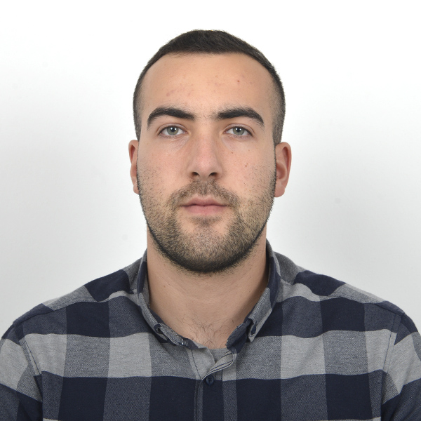

Kevin Dedja
Software Quality Assurance Tester
✉️:dedjakevin24@gmail.com
/ üìû:+355 693889244
/ üìçRruga Besim Qorri, 3001 Elbasan
Personal details:
Date of birth: 24/03/2000
Linkedin : Kevin Dedja
Profile
With a proven track record of 3 years in manual testing, I am an
accomplished software quality assurance tester. My expertise lies in
collaborating seamlessly with cross-functional teams to ensure the
delivery of impeccable software products. This encompasses a
spectrum of tasks including formulating comprehensive test plans
and test cases, executing meticulous test scenarios, adeptly
identifying and documenting bugs, and executing rigorous test
scenarios.
Skills
Agile Methodologies
Agile Project Management
Proficiency with Accounting Software
Organization and attention to detail
Microsoft Office Suite
Languages
English:⭐⭐⭐⭐⭐
Italian:⭐⭐★★★
Employment
Software Quality Assurance Tester
Publer,Tirana / March 2023-Present
- Test Planning: Develop test plans outlining the scope, objectives,
and testing approach for Publer's software.
- Test Case Creation: Create detailed test cases to cover various
features and scenarios within Publer
- Manual Testing: Perform manual testing of Publer's web and
mobile applications to identify bugs, usability issues, and
inconsistencies.
- Regression Testing: Continuously conduct regression testing to
ensure that new updates or changes do not introduce previously
resolved issues.
- Usability Testing: Evaluate the user interface and overall user
experience to ensure it meets usability standards.
- Compatibility Testing: Ensure that Publer functions correctly on
various devices and screen sizes.
- Collaboration: Collaborate closely with developers, product
managers, and designers to resolve issues and improve software
quality.
- Feedback and Improvement: Provide feedback on the overall
quality of Publer's software and suggest improvements to
enhance the user experience and functionality
Implementation specialist , Software
tester
2RM LAB, Tirana / 2020-Feb 2023
- Reviewing software requirements and preparing test scenarios.
Executing tests on software usability.
- Analyzing test results on database impacts, errors or bugs, and
usability. Preparing reports on all aspects related to the software
testing carried out and reporting to the design team.
- Interacting with clients to understand product requirements
- Building long-term relationships with clients , understanding their
unique needs and deliver a tailored service
Education
Economics engineering
Polytechnic University of Tirana, Tirana / Oct 2018 - Jun 2021